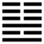

Địa Hỏa Minh Di (明夷 míng yí)
Tiến lên thì tất có lúc bị thương tổn, cho nên sau quẻ Tấn tiếp tới Minh di. Di [夷] nghĩa là thương tổn.
Thoán từ:
明夷: 利艱貞．
Minh di: Lợi gian trinh.
Dịch: Ánh sáng bị tổn hại, chịu gian nan, giữ điều chính thì lợi.
Giảng: Quẻ này ngược với quẻ Tấn ở trên; mặt trời (ly) lặn xuống dưới đất (Khôn) ánh sáng bị tổn hại, tối đi (Minh di).
Người quân tử ở thời u ám này, gặp nhiều gian nan, chỉ có cách giữ đức chính trinh của mình thì mới có lợi. Muốn vậy thì ở trong lòng giữ đức sáng mà ở ngoài thì nhu thuận để chống với hoạn nạn như tượng của quẻ Ly là sáng văn minh ở nội quái, Khôn là nhu thuận ở ngoại quái. Vua Văn Vương bị vua Trụ nghi ngờ, giam vào ngọc Dữu Lý, tỏ vẻ rất nhu thuận, không chống đối Trụ, mà để hết tâm trí vào việc viết Thoán từ giảng các quẻ trong Kinh Dịch, nhờ vậy Trụ không có cớ gì để giết, sau thả ông ra.
Không những ở ngoài phải tỏ vẻ nhu thuận, mà có khi còn nên giấu sự sáng suốt của mình đi nữa mà trong lòng vẫn giữ chí hướng, như Cơ tử một hoàng thân của Trụ. Trụ vô đạo, Cơ Tử can không được, giả điên, làm nô lệ, để khỏi bị giết, mong có cơ hội tái tạo lại nhà Ân; khi nhà Ân mất, ông không chết với Trụ, cũng không bỏ nước ra đi. Võ vương – con Văn Vương – diệt Trụ rồi, trọng tư cách Cơ Tử, mời ra giúp nước, ông không chịu; sau Võ vương cho ra ở Triều Tiên, lập một nước riêng. Như vậy là Cơ Tử giấu sự sáng suốt của mình để giữ vững chí, không làm mất dòng dõi nhà Ân (Hối kì minh, nội nạn nhi năng chính kì chí – Thoán truyện).
Đại tượng truyện bảo quân tử gặp thời Minh di, muốn thống ngự quần chúng nên dùng cách kín đáo mà lại thấy được rõ (dụng hối nhi minh), nghĩa là dùng thủ đoạn làm ngơ cho kẻ tiểu nhân, đừng rạch ròi, nghiêm khắc quá mà sẽ bị hại, tóm lại là làm bộ như không biết để chúng không nghi ngờ mình và để lộ hết dụng tâm của chúng ra mà mình sẽ biết được. Cơ hồ tác giả Đại tượng truyện muốn dùng thuật của Hàn Phi.
Ý nghĩa các hào :
1.
初九: 明夷, 于飛 垂其翼．君子于行, 三日不食, 有攸往, 主人有言．
Sở cửu: Minh di, vu phi thùy kì dực. Quân tử vu hành,
tam nhật bất thực, hữu du vãng, chủ nhân hữu ngôn.
Dịch: Hào 1, dương : ở thời u ám (ánh sáng bị tổn hại), hào này như con chim muốn bay mà cánh rũ xuống. Người quân tử biết thời cơ thì bỏ đi ngay, dù (không có tiền) phải nhịn đói ba ngày, mà đi tới đâu, gặp chủ cũ, cũng bị chủ cũ chê trách.
Giảng: Hào dương ở đầu thời Minh di, là người quân tử gặp thời hắc ám, có thể bị hại như con chim rũ cánh xuống. Cách xử thế là nên bỏ đi ngay, như Phạm Lãi bỏ nước Việt vì biết vua Việt là Câu Tiễn sẽ nghi ngờ mà hại các công thần, nhờ vậy tránh được cái hoạ bị giết như đại phu Chủng.
2.
六二: 明夷, 夷于左股, 用拯馬壯, 吉．
Lục nhị: Minh di, di vu tả cổ, dụng chửng mã tráng, cát.
Dịch: Hào 2, âm: Ở thời ánh sáng bị tổn hại, hào này như bị đau ở đùi bên trái, nhưng cũng mau khỏi, sẽ như con ngựa mạnh mẽ tiến lên, tốt.
Giảng: Hào này làm chủ nội quái Ly (sáng suốt), đắc trung, đắc chính, là bậc quân tử có tài, nhưng ở thời Minh di, hôn ám nên bị tiểu nhân làm hại ít nhiều, như bị thương ở đùi bên trái, nhưng rồi sẽ mau khỏi (dụng chửng), mà như con ngựa mạnh mẽ.
Tốt vì hào 2 trung, chính, lại vẫn thuận theo (vì là hào âm) phép tắc.
“dụng chửng mã tráng” R. Wilhelm giảng là : sẽ dùng sức con ngựa mạnh mà giúp đỡ người khác khỏi cơn nguy, J. Legge dịch là: tự cứu mình bằng sức một con ngựa mạnh. Chúng tôi theo Chu Hi và Phan Bội Châu.
3.
九三: 明夷, 于南狩, 得其大首, 不可疾, 貞．
Củu tam: Minh di, vu nam thú, đắc kì đại thủ, bất khả tật, trinh.
Dịch: Hào 3, dương: ở thời ánh sáng bị tổn hại, đi tuần về phương Nam, bắt được kẻ đầu sỏ, nhưng đừng hành động gấp, phải bền chí.
Giảng: Hào này ở trên cùng nội quái Ly là cực sáng suốt; nó là dương cương, ở vị dương, vậy là rất cương kiện, nó ứng với hào âm ở trên cùng quẻ Khôn (ngoại quái), hào này cực hôn ám. Nó sẽ đánh đổ hào âm đó. Nó cứ đem binh đi tuần về phương Nam (Nam thú: Phan Bội Châu giảng là đem quân tiến lên phía trước để trừ loạn) sẽ bắt được tên đầu sỏ phản loạn. Nhưng nó cương cường nóng nảy, nên phải khuyên: đừng gấp, phải bền chí giữ đạo chính.
4.
六四: 入于左腹, 獲明夷之心, 于出門庭．
Lục tứ: Nhập vu tả phúc, hoạch minh di chi tâm, vu xuất môn đình.
Dịch: Hào 4, âm: như vô phía bên trái của bụng (ý nói chỗ u ám); tấm lòng ở thời u ám (minh di) là nên bỏ nhà mà ra đi.
Giảng: Hào này âm nhu, ở vào thời Minh di, mà lại vượt quẻ Ly, sang quẻ Khôn rồi, tức bỏ chỗ sáng sủa, bước vào chỗ tối tăm, cho nên ví như vô phía bên trái của bụng. Nhưng hào này đắc chính (âm ở vị âm) nên có thể rút chân ra khỏi cảnh khốn nạn ấy được: cứ bỏ nhà ra đi, tức tránh cho xa cảnh đó, mặc nó.
Đó là hiểu theo Phan Bội Châu. Chu Hi nhận rằng không thấy được nghĩa hào này.
5.
六五: 箕子之明夷, 利貞．
Lục ngũ: cơ tử chi Minh di, lợi trinh.
Dịch: Hào 5, âm: như ông Cơ Tử ở thời u ám (Minh di), cứ bền giữ đạo chính thì lợi.
Giảng: Thường các quẻ khác, hào 5 là ngôi chí tôn, quẻ Minh di này hào trên cùng mới là ngôi chí tôn, hào 5 là người thân cận với ngôi chí tôn. Hào trên cùng là ông vua rất hôn ám như vua Trụ, hào 5 là người thân cận có đức trung, như ông Cơ Tử; ông giả điên để khỏi bị Trụ hại mà sau giữ được dòng dõi nhà Ân, như vậy là giữ vững đạo chính, ở ngoài làm ra vẻ hôn mê, mà trong lòng vẫn sáng suốt.
6.
上六: 不明晦, 初登于天, 後入于地．
Thượng lục: Bất minh di, sơ đăng vu thiên, hậu nhập vu địa.
Dịch: Hào trên cùng, âm: không còn là ánh sáng bị tổn thương nữa, lên cao tới trời mà rồi sụp xuống đất.
Giảng: Hào trên cùng, âm; ở cuối cùng thời Minh di, lại ở trên cùng ngoại quái Khôn, tức như người có địa vị tối cao mà lại hôn ám cùng cực; như vậy là tối mù mù, chứ không phải chỉ là ánh sáng bị tổn hại (Minh di), nữa, cho nên Hào từ bảo là “bất minh di”. Có cái tượng lên cao tới trời (địa vị tối cao) mà rồi sụp xuống đất.
*
Quẻ này khuyên người quân tử ở thời hắc ám quá thì có thể bỏ nhà, nước mà đi; hoặc muốn ở lại thì giấu sự sáng suốt của mình mà giữ vững đạo chính để chờ thời.